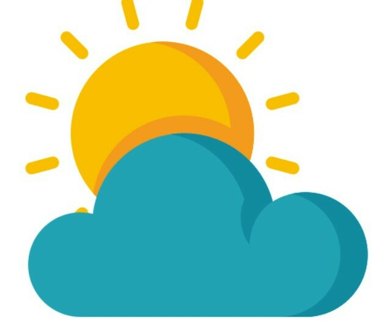

9 Days Lemosho Route
The Lemosho route is one of the newer routes on Mount Kilimanjaro. The route begins in the west and rather than simply intersecting Shira Plateau (like Machame), Lemosho crosses it from Shira Ridge to Shira Camp. Climbers encounter low traffic until the route joins the Machame route.
Details
9 Days Northern Circuit Route
The Northern Circuit route is one of the best routes on Kilimanjaro, offering nearly 360 degrees of beautiful scenery including the quiet, rarely visited northern slopes. As the longest route on Kilimanjaro, the Northern Circuit also has the most acclimatization time and the highest summit success rate. Thus, the Northern Circuit route is highly recommended.
The route approaches Mount Kilimanjaro from the west, beginning with a long drive from Moshi to
Londorossi Gate. From there, the first two days are spent trekking through the rainforest to Shira Ridge, before crossing the Shira Plateau. The route then heads north and circles clockwise from Moir Hut to Buffalo Camp to School Hut, before summiting from the east. Descend is made via the Mweka route.
A 10 day variation that includes an overnight at Crater Camp is available as a private climb by special request.
The Machame route, also known as the “Whiskey” route, is the most popular route on Kilimanjaro. Machame’s draw is in its scenic beauty. However, the trail is considered difficult, steep and challenging, particularly due to its shorter itinerary.
Details
7 Days Rongai Route
The Rongai route is the only route that approaches Kilimanjaro from the north, close to the Kenyan border. Though gaining popularity amongst climbers, this route still experiences low crowds. Rongai has a more gradual slope than the mountain’s other routes.
Details
7 Days Umbwe Route
The Umbwe route has a well-deserved reputation of being the most challenging route on Mount Kilimanjaro. Due to the fast ascent to high altitude, this route does not provide the necessary stages for acclimatization. Although the number of people on this trail is very low, the chances of success are also low. Umbwe is considered to be very difficult, taxing route – one that should only be attempted by strong hikers who are confident in their ability to acclimatize quickly to altitude.
Approaching from the south, the Umbwe route is a short, steep and direct climb. After reaching Barranco Camp, the trail turns east and traverses underneath Kilimanjaro’s Southern Ice Field on a path known as the Southern Circuit before summiting from Barafu. Descent is made via the Mweka route.
The seven day variation adds an acclimatization day on day three at Barranco Camp.
6 Days Shira Route
Does Kilimanjaro hold a special fascination for you? Are you planning to realise your dream through the Shira Route? Take a deep breath and read through! We say a deep breath because the Shira route catapults you to an altitude of 3600 meters on the very first day and leaves you gasping for air.
Details
6 Days Marangu Route
The Marangu route, also known as the “Coca-Cola” route, is the oldest, most well established route on Kilimanjaro. This is the only route which offers sleeping huts in dormitory style accommodations in lieu of camping. There are 60 bunk beds each at Mandara and Kibo Huts, and 120 bunk beds at Horombo Hut. Guests are supplied with mattresses and pillows, but sleeping bags are still required. The huts have communal dining halls and basic washrooms, ranging from flushing toilets and running water at the lower huts to long drop toilets and buckets of water at Kibo Hut.
The route approaches Mount Kilimanjaro from the south, beginning with a short drive from Moshi to Machame Gate. The path leads hikers through the rain forest to Shira Plateau. Here, many of Kilimanjaro’s routes converge. Then the route turns east and traverses underneath Kilimanjaro’s Southern Ice Field on a path known as the Southern Circuit before summiting from Barafu. Descent is made via the Mweka route.
The five day variation does not have an acclimatization day on day three at Horombo Hut.
Mount Meru Climb
At 4566m, Mount Meru is the fifth highest mountain on the African continent and the second highest in Tanzania. About 250 000 years ago, a massive volcanic blast blew away the entire eastern flank of the mountain and left it with the characteristic and distinctive appearance it has today. Last eruption: 1910.
At 4566m, Mount Meru is the fifth highest mountain on the African continent and the second highest in Tanzania. About 250 000 years ago, a massive volcanic blast blew away the entire eastern flank of the mountain and left it with the characteristic and distinctive appearance it has today. The Mt Meru ascent passes through many different vegetation zones. The dry forest of the lower region gives way to a dense mountain rainforest, which then turns into a scrubland. Towards the top of the mountain, the vegetation consists of heath and moorland and is then finally replaced by the stunning baron alpine deserts. As the flora changes the wildlife does so too, which is diverse and equally impressive. During the ascent, you will regularly come across large game such as elephants and buffalos but you may also come across leopards. Due to this, it is obligatory to be accompanied by an armed park ranger on your tour.
Day 1 Arusha - Momella Gate (1500m) - Miriakamba Hut (2500m)
In the morning, you will be collected from your hotel and after a 45-minute drive, you will arrive at the Arusha National Park Gate. At the national park gate, your guide will complete the obligatory entry forms and whilst he does so, you can peruse the information boards of the national park. Once the formalities have been completed and the hiking team consisting of porters from the surrounding villages is formed, you will then be driven a little further to Momella Gate. An armed park ranger will accompany you while you start your hike and get a first glimpse of the wonderful giraffes and buffalos. Once you have left the buffalo herds and giraffes behind, you will enter the acacia forest in which you will follow the Southern Route. After a steady 2-hour climb, you will reach Maio Falls and some picturesque meadows that are a perfect place for a picnic. After a rest, you will again be on your way and soon reach the well-known ‘Arched Fig Tree’. Here your park ranger will tell you about the formation of this tree and how it gained its shape forming an arch over the path. After another 1½ - 2 hours, you will reach the Miriakamba Hut. Evening meal and overnight stay at the Miriakamba Hut. Breakfast; Lunch; Dinner
Day 2 Miriakamba Hut (2500m) - Saddle Hut (3550m)
In the morning, you will leave the Miriakamba Hut behind and follow a steep track with wooden steps upwards. Due to the gain in height, it will be noticeably cooler than the previous day and due to this, the hike will seem to get easier. The clouds also often hang in the rainforest and dip the lush vegetation in a moody atmosphere. After approximately 2 hours, you will reach the vantage point ‘Mgongo wa Tembo’ (Elephant back) at an elevation of 3200m, where you will enjoy a well-earned break. After another hike in which the vegetation changes from rainforest into an airy bush land, you will reach Saddle Hut (3550m) at midday for a relaxing lunch break. During the afternoon, you have the option of a side trip to Little Meru (3820m) which takes approx. 1 - 1 ½ hours and from where you can have wonderful views of Arusha National Park and of the Kilimanjaro (approx. 80 km away). Back at the hut, a warm dinner is waiting for you before you will have the final preliminary talk in preparation for the following day’s climb to the summit. Breakfast; Lunch; Dinner
Day 3 Saddle Hut - Socialist Peak (4562m) - Miriakamba Hut (2500m)
After an early start with tea and biscuits, you will leave for the summit at 02:00 hrs. By torchlight, you will follow the trail through bush land to the so-called Rhino Point (3821m) in which the path turns into a little more challenging trek with occasional light climbs. You will follow the north ridge to the summit on which you walk on ground alternating between lava ash and rock. After approx. 4 - 5 hours, you will have the summit and the Tanzanian flag in your sights. From the summit, you will be able to enjoy the sun rising above Kilimanjaro and the fantastic view of Mount Meru’s crater with its steep sides and the “Ash Cone” in the middle. The descent follows the same route back to Saddle Hut (3550m) where you will take a well-deserved long break and recuperate with hot soup and tea. Once refreshed, you will continue with the descent. During the early afternoon, you will reach Miriakamba Hut (2500m) - tired but happy. At this hut, you can relax and think about the last stage that you have completed. Evening meal and overnight stay at Miriakamba Hut (2500m). Breakfast; Lunch; Dinner
Day 4 Miriakamba Hut (2500m) - Momella Gate (1500m)
After breakfast, you will follow a 2 - 3 hour trek over the so-called ‘Northern Route’ back to Momella Gate. The descent is shorter than the ascent but there is still the chance to see elephants, buffalos, giraffes as well as the black and white columbus monkeys. At the gate, you will say farewell to your hiking crew and your driver will take you back to Arusha. Breakfast
Note:
The summit stage contains a few simple but unsecured climbing passages. A good head for heights and sure footedness are absolutely necessary. In adverse weather conditions (heavy rain, icy rocks and paths or thick fog) the park ranger can call off the climb to the summit. We do not advice climbs in the rain season (April and May).
Mount kilimanjaro Gears
Kilimanjaro Equipment List
What Kilimanjaro gear to take and why
Getting the right Kilimanjaro equipment will make a dent in your budget.But there is no way around it, you need good gear for Kilimanjaro. Being cold, wet and miserable does not increase your summit chances. Trust me on that one.
The Kilimanjaro equipment list below has all the essential gear that you need for your Kilimanjaro climb.
It tells you why you need it and a bit about the different options you have when buying equipment specifically for your Kilimanjaro climb.
(This is not meant as a Kilimanjaro packing checklist. A proper checklist to use when you are actually packing is included in the free guide.)
Kilimanjaro Equipment List
Camping Equipment for Kilimanjaro
- Any half decent Kilimanjaro tour operator should supply the tents. Tents on Kilimanjaro need to be able to take a beating, so if you have to take your own, make sure it is one that is meant for such conditions (extended bad weather, strong winds and very rocky ground). You can not afford to have any leaks or tears, zips that don't keep wind out etc.
- Invest in a good thermal sleeping mat. Often you can hire those from the operators. (You don't need this on the Marangu route. You still need a good sleeping bag, though...)
- Invest in a good sleeping bag that's rated for at least -10°C/four seasons. Down sleeping bags are great. They are light, pack down small and definitely keep you warm at night, but down is of course expensive. Again, you can usually hire sleeping bags, since the real warm ones don't come cheap and most people will not need theirs again after this trek.
- A sleeping bag liner can help with temperatures. I have a silk liner and it makes a huge difference at the higher camps. I wake up every time it slips of my shoulders. A liner is also good for people who are squeamish about renting a sleeping bag. (Or if you plan to backpack through Tanzania before or after and stay in more dubious accommodation...)
- You can also get more expensive fleecy liners that are made specifically for warmth and are made from the same material as the filling of synthetic sleeping bags. They may be a good option if you already have a good three seasons bag.
Footwear - Boots
- The most important piece of equipment for Kilimanjaro is a pair of good goretex trekking boots. Some people recommend leather, but leather is much heavier and the weight on your feet makes a big difference in the amount of energy you expend when walking.
- Take thick, thermal socks (two pairs) and thinner/normal socks. If your feet tend to sweat you need a fresh pair (or freshly rinsed and dried pair) every day. Salt means grit and abrasion. Make sure you always wear dry socks. Keeping your feet in good condition is essential!
The boots need to be absolutely waterproof and breathable, very comfortable, and well worn in!!! The very last thing you need are blisters or sore feet!
If you buy new boots, make sure they are big enough to accommodate the extra pair(s) of socks you'll be wearing during summit night.
If boots are too tight it hinders circulation and your feet freeze... Also make sure boots are high enough. You will need that ankle support, especially on the descent from the summit.
Outer Clothing Layers
- Good Rain protection is also essential equipment on Kilimanjaro. Once your gear is wet you have no hope of drying it again, and there is a very good chance that you'll get rained on on the first day or two.
- A down jacket is a wonderful piece of equipment for Kilimanjaro. Not only during summit night but also to sit around at dinner time when your body doesn't generate heat through movement. (I find the evenings in camp by far the coldest part of everything...) You can't beat down, but it's expensive. If you'll never need it again and if you can't hire it (I always hire), then a few warm fleeces will do the job, provided you wear some windbreaker on the outside.
- Fleeces are great because they give a lot of warmth for little weight. Two or even three thinner ones are preferable over one single thick fleece, not only because you can better adjust your clothing to the temperatures. The main reason is that the air between clothing layers provides better insulation than the clothes. Wearing many layers is the key to staying warm on Kilimanjaro.
- I certainly recommend to invest in some quality trekking pants. Mine are wind resistent, water resistent (not quite water proof but it takes heavy rain before it soaks in) and they even repel dirt (which isn't essential, but nice if you spend a few months in Tanzania living out of a pack.) They weigh next to nothing and are very comfortable to wear. I can also unzip the legs and wear the pants as shorts.
This outermost layer should be high quality and breathable, and big enough to go over all your other clothes on summit night (when it will keep the wind off and add warmth).
v Get rain protection for your pack as well. Either get an outer cover or make sure everything inside is protected in plastic bags. (My rain jacket is big enough to wear over my day pack. As for my other Kilimanjaro equipment, I only climb with quality operators who will ensure that while on Kilimanjaro, my gear is protected from moisture. Find out how your Kilimanjaro tour company carries your stuff up the mountain.)
Two pairs are enough. Make sure your pants are big enough to comfortably wear over several thermal under layers.
Don't take heavy pants like jeans or similar. They offer no benefit, they only add weight and they will never dry if they get damp or wet.
Thermal layers
Thermal under layers have two functions. They insulate against cold and they draw moisture away from the body (they are breathable or "wicking"). But beware, that wicking effect only works if ALL the layers you wear do it. Most good fleeces are breathable and your rainwear also should be.As explained above, the key to staying warm on Kilimanjaro is wearing many layers, so bring a couple of pairs of long johns and long sleeved thermal tops. I use one pair to walk in and one bone dry pair to sleep in and to also wear on summit night.
I can recommend the Icebreaker brand from New Zealand, because as the lady in the specialist shop who sold it to me explained: "You can wear them every day for a whole month and you'll still never be lonely." They don't smell :-).
Everybody is different in their tolerance for cold, so do use your own judgment regarding how many and how high quality thermal under layers you take. Thermals come in different ratings. I live in the tropics and only the best and warmest will do for me. I also have a nice, comfortable pair of fleece pants to go over the long johns and under the trekking pants.
Whatever you take, do make sure you'll have dry clothes on summit night.
Additional Kilimanjaro equipment for the cold
You also need gloves and a wooly hat, and maybe something to cover your ears if the hat doesn't.Get a nice, cosy, wooly hat. I never take mine off after the second night. I wear it walking, I wear it eating, I wear it sleeping. Or get a balaclava. You probably won't want to wear it so much around camp, but it will protect your face if you get a windy summit night. (And you can use it when you rob the bank to fund the whole trip.)
Good gloves are very important. Your fingers don't move or do anything on the way up, and since they'll likely be clutching your walking poles they are very exposed to the elements. A thermal pair underneath and a water and wind proof pair over the top would be ideal.
Some people say hand warmers aren't needed, others say they are essential. You know what kind of person you are. Do you tend to get cold hands or feet easily? Do take hand warmers!The little oxygen activated sachets are cheap, take up no room and weigh nothing. The good ones stay warm for 12 to 16 hours and they are bliss to have. Yes, you can use them while clutching walking poles. Just shove them inside your gloves.I myself would not be able to do without them. Do get several packets and if you buy them on Ebay or similar make sure you test them. I've seen the cheaper Chinese brands fail to do anything when opened.
Details
Mountain Biking
Cycling & Mountain Biking
A Tanzanian cycling safari is amazing because there are thousands of miles of single-track routes to explore, most of which are smooth, easy riding.
Tanzania biking tour offers diversity - a range of biking terrain combined with fantastic scenery! With plenty of National Parks and game drives, this tour offers the opportunity to see the Big Five, Mt Kilimanjaro, the Ngorongoro crater, The Usambara and Uluguru Mountains and the stunning beaches of Zanzibar.
Tanzania has stunning landscapes - from the slopes of Mt Kilimanjaro to the Rift Valley. This trip offers biking as it should be - off the beaten path and great fun!
5 Days Kilimanjaro Cycling Adventures
Kilimanjaro bike trek comprising of both Maasai community lands and Wildlife Management Areas Kilimanjaro Mountain
Kilema route
Kilema route is the only route that Bike trek to Kilimanjaro can reach to the top this route runs parallel with the Marangu route.
The Kilema route is mainly used as an access road by vehicles to bring supplies to the Horombo hut and to evacuate medical emergencies from Horombo hut. The route from Kilema gate to Horombo hut is a 4 x 4 gravel road, which is usually in a fair condition, by mountain bike.
Our experienced guides have done a good number of successful bike trek to summit Mt Kilimanjaro 5895M, the trip took 5 days with proper acclimatization.
The Kilema route with first night at the Kilema camp option, is shorter, less strenuous and involves more mountain biking,
compared to the Kilema route option with the first night at Mandara hut. However, it is more expensive, as the first night is spend camping in tents
and the rest of the nights are spending in the Marangu route A-frame huts.
This activity provides physical exercise and recreational use of the natural environment with minimum impact while enhancing visitors experience.
Summit bound visitors will use Kilema route (19km) and cyclists will meet their porters at Horombo and continue to the summit. For non-summit
bound visitors, cycling starts from Londorosi gate or from Morum Picnic Site then back to Morum (a 44km ride)
Back at ground level we will have another day of rest before it all gets serious. In a total of 3 different stages we will prepare ourselves at Base camp. A lot of the time we will have to push the bikes. Riding them would theoretically be possible but it would use far too much energy. We need to save most of this for the day of the summit when we will have a climb of 1200m. There is more than enough time for this, as we will set off shortly after midnight. As a reward for reaching the summit we have a compulsory souvenir photo in store for you as well as a nearly 5000m descent. You are guaranteed to be talking about this for a long time afterwards. The region comprises of acacia woodland and open plains that support a remarkable variety of wildlife and spectacular views of Mt. Kilimanjaro.
The most common animals in the area include wildebeest, zebra, gazelles, impalas, giraffes and baboons. Depending on the time of year, elephants are a very common sight given the region lies along an elephant corridor linking Kenya Amboseli National Park & Mt. Kilimanjaro.
This region is home to the nomadic Maasai herdsmen who co-exist with the surrounding wildlife hence the term Maasai Land. Given the rich culture of the Maasai people and the variety of wildlife, a cycling tour in this area is ideal for those discerning travellers looking for an unforgettable off-the-beaten-path adventure experience comprising of walking, photography, culture and scenery.
Kilimanjaro Fitness
Fitness Program
Mount Kilimanjaro is the highest mountain in Africa and hiking to the peak is a challenge that should not be under estimated. With all the information you could possibly gather, added to being physically prepared, one’s chances of reaching the summit is substantially increased. Stamina and mental determination to a great extent, will determine whether or not you will be successful in you quest to conquer the Roof of Africa. Being physically prepared for the trek will also greatly contribute to the level of your perseverance, confidence and personal enjoyment!
How fit do you have to be?
The type of fitness is more important than the degree of fitness. Climbing Mt. Kilimanjaro is a hike, therefore the best preparation one can do is to hike, preferably under simulated conditions. Although jogging could be beneficial to your fitness level, it does not fully prepare your muscles for a strenuous 6-day hike. We suggest that you spend some of your training by merely hiking. In addition to regular gym workouts, make sure you also go for walks in order to stimulate relevant muscle development. Try to do a one or two day hiking trials in your area. This will not only be an excellent way for physical preparation, but also an enjoyable means to prepare yourself mentally.We have furthermore developed a practical (in terms of time and costs) fitness preparation guideline to assist you in getting your body ready for a Mt. Kilimanjaro summit attempt. This guide contains a gym and a hiking program that should be followed simultaneously over an 8 week period.
Important points to remember – Before you start!!
Medical Check-up
Before embarking on a fitness program, it is always wise to first seek the advice of a medical doctor. Feel free to share this program with your family doctor for input. Chances are, your doctor will be delighted to know that you undertake to exercise regularly.Progressive Resistance
In essence, the gym section of our fitness program consists of regular and progressive resistance exercises with either free weights (like barbells and dumbbells) or free weight machines that are readily available in gymnasiums. The idea behind progressive resistance is that your exercise regime can be tailored to your age, physical condition and strength, steadily progressing to higher resistance level as you develop.Safety Factor
Progressive resistance movements could be customized to individual strength and fitness levels, therefore our fitness program is potentially safe. It is however essential that all of the exercises be performed correctly and that basic safety procedures are followed at all times. It is furthermore always a good idea to invest in reading material on physical fitness and to consult your local fitness instructor about performing each exercise correctly.Sets and Repetitions
This workout consist of repetitions (reps) and sets. A rep is a single count of an exercise, for example moving downwards for one squad movement. A set is knows as a series of reps – an average set consist of 8 to 12 reps.Warm Up
It is highly recommended that one always warms up the muscles before starting with any exercising routine. The norm is doing a variety of stretching movements to warm up, strengthen and progressively challenge the tendons, ligaments, joints and muscles. Stretching is very important, as it is the best way to prepare for an injury-free workout. Details
Mount Kilimanjaro Weather
Mount Kilimanjaro Weather
| Month | Jan | Feb | Mar | Apr | May | Jun | Jul | Aug | Sep | Oct | Nov | Dec |
| Weather |  |